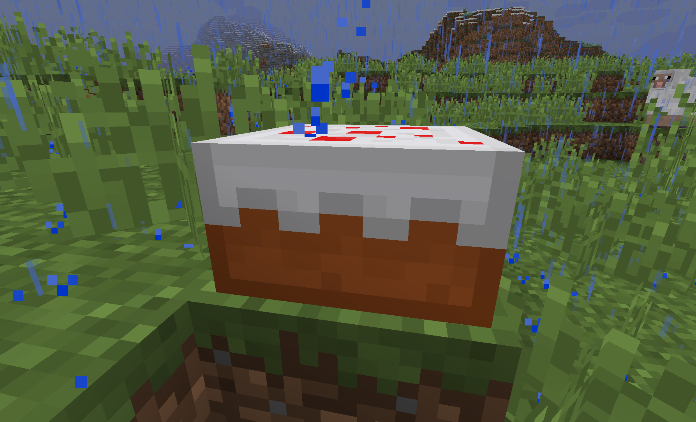
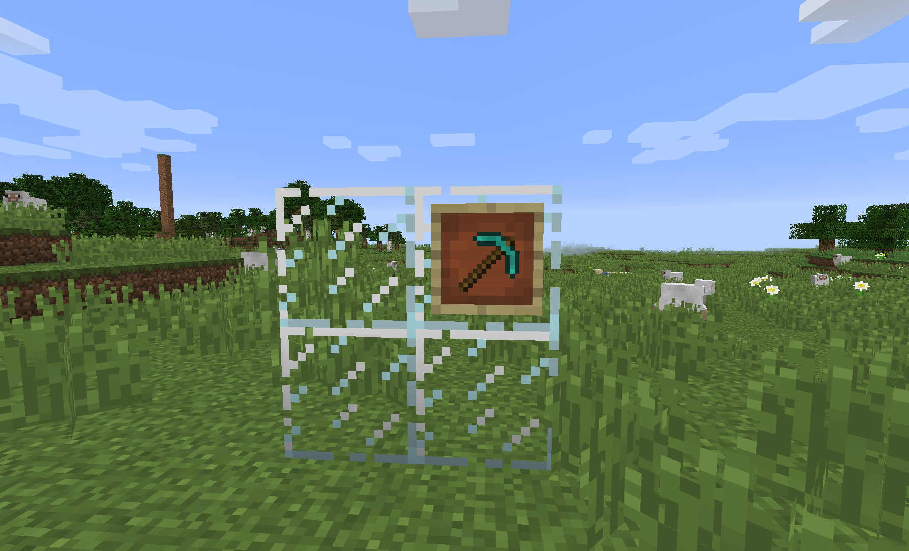
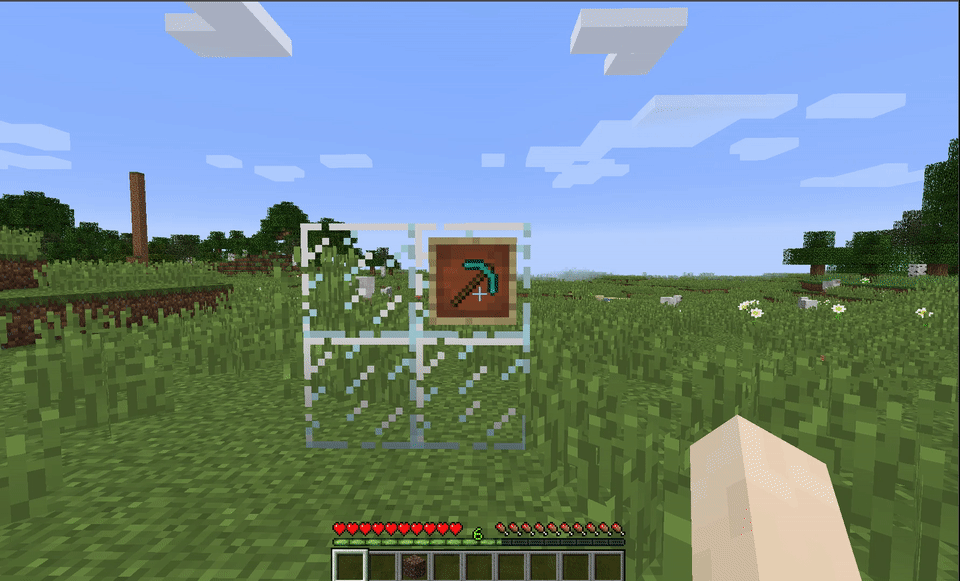

Easy Crop Harvesting
Block Tweaks


Extra Bonemealing

Re-Usable Cakes

Extra Tool Efficiencies

Torch Helper

Glitching Item Fix
Easy Crop Harvesting
 Right-Clicking on crops will do all the work of harvesting for you!!
Right-Clicking on crops will do all the work of harvesting for you!!
Right clicking (empty hand or not!) will earn you not only the original drop of the crop, but even some of the bonus seeds that you'd normally get (minus one, of course, to account for what's been re-planted for you). Works with most plantables, assuming they follow similar code to Vanilla.
Extra Bonemealing
Ever been annoyed by things you can't bonemeal?
With V-Tweaks, you can now bonemeal Cactus and Sugar Cane (up to their natural 3-block-tall limit), and use blaze-powder on Netherwart!
With V-Tweaks, you can now bonemeal Cactus and Sugar Cane (up to their natural 3-block-tall limit), and use blaze-powder on Netherwart!
Re-usable Cakes
Breaking a completely un-eaten cake will drop itself. FINALLY! HAVE YOUR CAKE AND EAT IT TOO!
Tool Efficiency Tweaks
Pretty self-explanatory. Things that should break easier with certain tools do (skulls, levers, glass, pistons with picks, hay with shears and axes, etc.).
Torch Helper
 Having your hands full is a pain - so is switching around your hotbar.
Having your hands full is a pain - so is switching around your hotbar.
The Torch Helper tweak allows you to right-click with any generic tool item and place a torch. Special Conditions: Empty Offhand, and mod compatibility works if the item you want placed as a torch has the word torch in its localized name (i.e. what "torch" is in your language").
Glithing Item Fix
 Nobody likes glitching items.
Nobody likes glitching items.
When enabled, item frames, their stored items, paintings and records from jukeboxes all go straight to your feet instead of falling out near the original location.